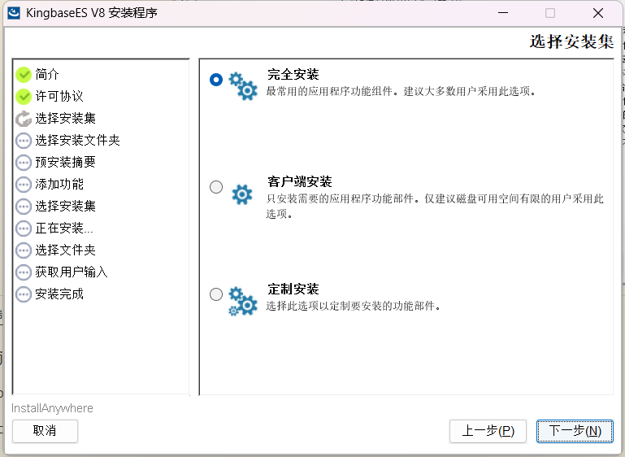
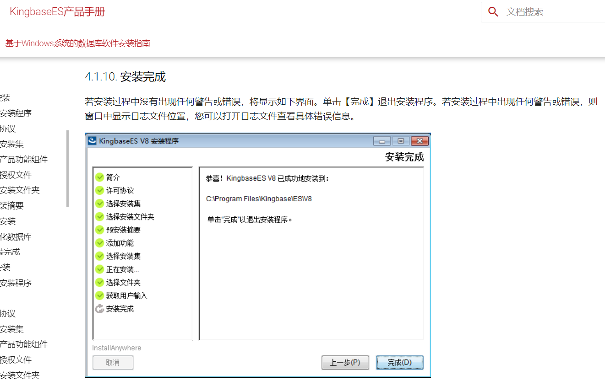

金仓数据库环境配置
本节旨在详细阐述金仓数据库的环境配置流程，涵盖了从安装金仓数据库、操作数据库，到使用数据库连接工具 Navicat 连接数据库的全方位说明。
本节目录
安装金仓数据库
以下内容将介绍如何在 Windows 系统上进行金仓数据库的图形化安装。若您倾向于使用命令行安装，请参阅官方文档以获取详细步骤。
PS：我使用的金仓数据库版本为 V8R6。
下载安装包
有课程资料包
在的课程资料包中，安装数据库 文件夹内包含了一个以 .iso 为扩展名的文件。双击此文件以打开，其内部有一个名为 KINGBASE.EXE 的安装程序。
无课程资料包
若未获得课程资料包，可访问金仓数据库官方网站以下载安装包：金仓数据库官方下载
使用安装包
图形化安装
以下是基于图形界面的安装步骤。若在安装过程中遇到任何错误，请参考金仓官方手册：金仓数据库 Windows 安装指南
我们将逐步解析安装过程：
在安装之前，请先保证系统某一磁盘(单一磁盘！)的剩余空间大于 12GB，否则安装程序会拒绝安装。
- 运行
KINGBASE.EXE，等待其解压完成后自动开始安装。 - 遵循安装向导的指示完成安装。部分情况下，可能会让选择
实例管理，推荐选择新的实例。- 在打开的窗口中，先同意许可证，然后点击
下一步：
- 然后选择许可协议。点击右侧的
选择授权文件后：
- 对于有课程资料包的用户，请选择课程资料包里面的
安装数据库目录下的名叫license_***的目录，里面有一个名字类似license_***.dat的文件，选择该文件后，点击下一步。 - 对于无课程资料包的用户，请在官网上下载到
license.dat文件，然后选择该文件，点击下一步。
- 对于有课程资料包的用户，请选择课程资料包里面的
- 在
选择安装集时，选择完全安装，之后点击下一步：  - 在
选择安装目录时，选择一个合适的目录进行安装，需要保证该目录隶属的磁盘有超过 12G 的剩余空间，否则会直接安装失败！ - 之后一直选择
下一步，直到获取用户输入部分。此部分我们需要进行一系列配置(其它参数不用动)：
- 端口号配置：54321
- 管理员用户名：system
- 密码我们选择简单的
123456 - 确认密码：
123456 - 编码：
GBK - 兼容模式：
MySQL - 大小写敏感：
NO
- 最后，点击
下一步并稍作等待，程序即可完成安装。 - 如果过程中，出现提示说
发生问题，则请使用安装后自带的卸载工具将数据库卸载干净，然后重新安装。
- 在打开的窗口中，先同意许可证，然后点击
命令行安装
对于命令行安装，请参照以下官方手册进行：
- Windows 版：金仓数据库 Windows 命令行安装指南
- Linux 版：金仓数据库 Linux 命令行安装指南
完成标志
如官方手册所示：

强调项
由于作者在安装过程中并没有出现错误，故如果过程出现报错，请参考官方手册的 QA 部分。
PS：有时候简单的重来也可能能够解决问题，但注意，重来之前务必把之前的内容删干净，且重来时选择 新的实例！